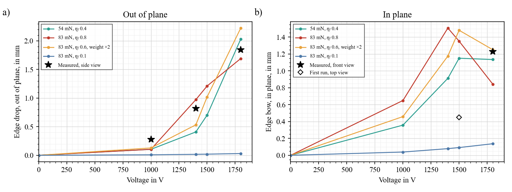
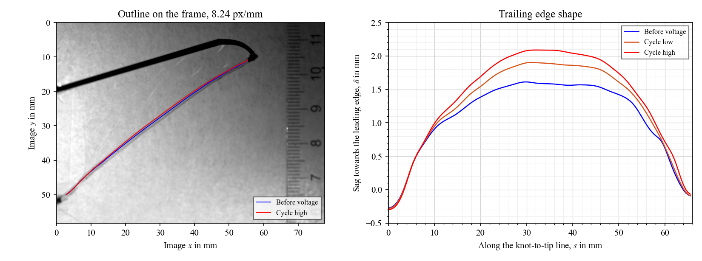
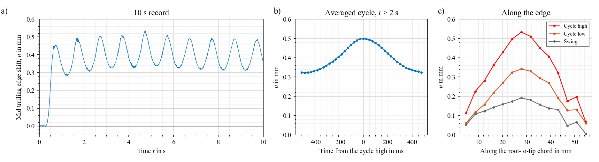
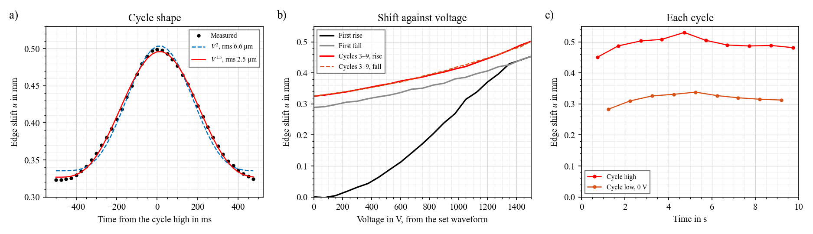
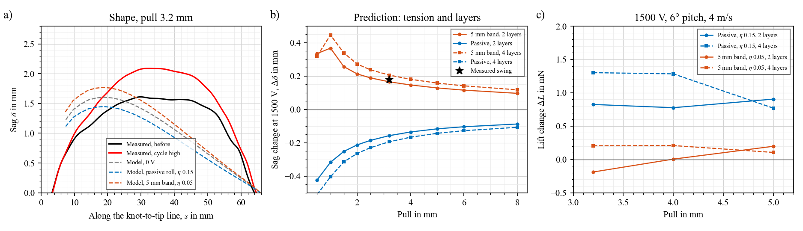
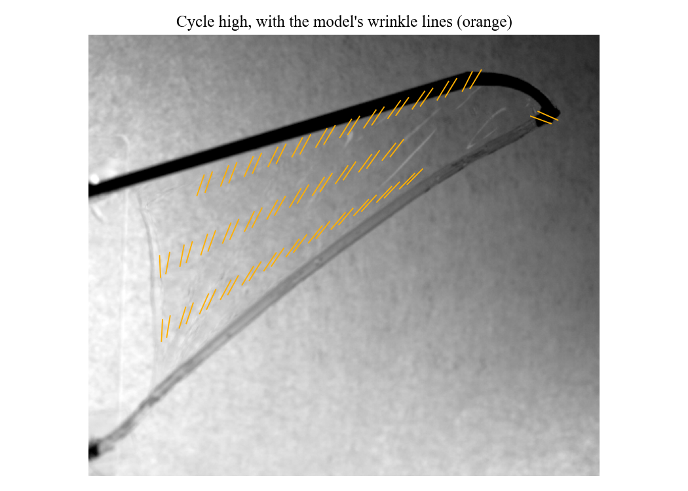
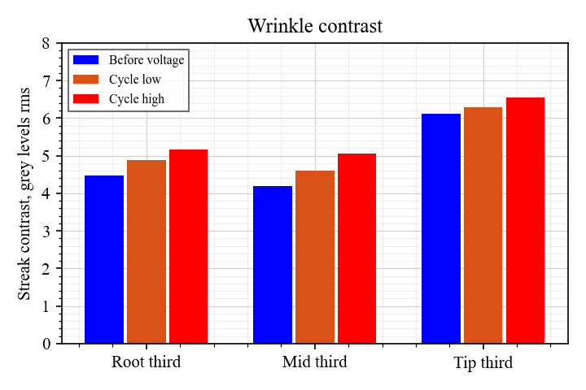
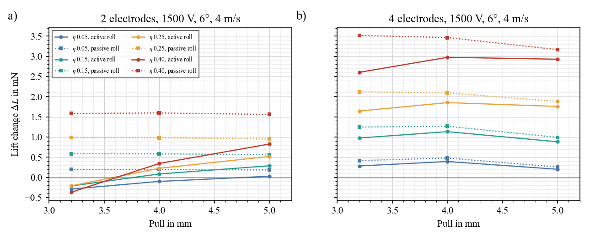

Active membrane wings / First wing test
First wing test
2-electrode wing. First run 4 Nov: top view, 1500 V, 1 Hz. Second set 5 Nov: side, front and diagonal views, 1000–1800 V, 1–20 Hz, two tensions. It works at every frequency tried. Most of the trailing edge motion is out of plane, up to 1.8 mm at 1800 V, and extra tension cuts that by about 13×. The roll is tense (50–96 mN from its length), and a model with the wing's weight and a strongly active roll reproduces the shape of these results.
Summary
| Finding | Number | Basis |
|---|---|---|
| Trailing edge bows towards the leading edge at voltage | Swing 0.18 mm at 1.00 Hz, noise 2 µm per frame | Measured |
| It does not return to rest at 0 V | First rise 0.45 mm, then back only to 0.29 mm. About 0.3 mm stays | Measured; cause unknown |
| Later cycles follow one path | Up and down agree within 3 µm, no lag at 1 Hz. Swing ∝ $V^{1.4\text{–}1.5}$, not $V^2$ | Measured, assuming the waveform as set |
| Wrinkles grow at voltage | Streak contrast +15–20 % in the root and middle thirds, +7 % at the tip | Measured |
| Tension | 50–96 mN from the roll's length (cut 52.94 mm). The model gave 17 mN at a 2 mm pull, about 30 mN for the measured sag | Measured length; the model is too slack |
| The active roll explains the sign | Passive roll −0.15 mm, active roll +0.18 mm by fit, measured +0.18 mm | Model against measured |
| Roll efficiency is low | $\eta_f$ 0.06–0.17 with 20 mm active. Earlier vocal cord fits: 0.05–0.15 | Model fit |
| Skin $\eta$ is still unknown | 0.05 to 0.4 all fit. About 0.07–0.09 if roll and skin have the same $\eta$ | Model; test 3 or the roll DEA test separates them |
| Lift change at 4 m/s, 6°, 4 mm pull | −0.10 to +0.34 mN as built, out of 6.9 mN. Passive roll +0.19 to +1.6 mN. POC page: 7 mN | Prediction |
5 Nov: three views, voltage, frequency, tension
Side view, 1800 V, sine squared, 1 Hz, first 4 s, real time. The rolled edge is the lower line.
Diagonal view, 1800 V, plain sine, 15 Hz, played 8× slower.
![Left, trailing edge shift over 4 s at 1800 V: side view swings between 0.5 and 1.7 mm with flat tops, front view between 0.8 and 1.2 mm, diagonal view with plain sine between 0 and 0.9 mm, almost square. Middle, side view cycle high rises from 0.28 to 1.84 mm between 1000 and 1800 V, steeper than V squared, with a hanging string curve through the points. Right, diagonal swing against frequency, log scales: 0.58 mm at 1 Hz falling to 0.1 mm at 10 and 20 Hz with a bump at 15 Hz; the average stays near 0.37 mm; with more tension everything is 10 to 30 times smaller.](V_views.png)
| Finding | Number | Basis |
|---|---|---|
| Out of plane dominates | 1800 V, 1 Hz: side view high 1.84 mm, swing ±0.69 mm. Front view, in plane: ±0.14 mm | Measured |
| Steep with voltage | Side view high 0.28, 0.82, 1.84 mm at 1000, 1400, 1800 V: about $V^{3.2}$; the swing within the cycle about $V^{4.2}$ | Measured; ascending order |
| Flat tops | Plain sine gives an almost square motion in the diagonal view. The edge seems to go slack at the top of each cycle | Measured; reading |
| Frequency | Diagonal swing ±0.58 mm at 1 Hz, 0.17 at 5 Hz, 0.10 at 10 and 20 Hz, a bump to 0.23 at 15 Hz. The average offset stays 0.35–0.40 mm | Measured; voltage at the device unknown |
| Tension | Out-of-plane swing 13× smaller at 1 Hz, 12–40× at 5–15 Hz, no bump. In plane only 2× smaller | Measured; tension not measured |
| Set again | Front view, 1800 V: cycle low 0.77 mm after the first cycle, 0.97 mm after 9. Side view 0.49 → 0.53 mm. Plain sine, diagonal: back to rest | Measured |
| Shape in plane | Front view, sine squared: $u \propto V^{1.5}$ within the cycle, as in the first run | Measured |
| Roll tension from its length | Cut 52.94 mm, now 61.6–64.8 mm: stretch 1.16–1.22, so 50–96 mN. With more tension: 67–70 mm, 1.27–1.33, 76–131 mN | Measured length, Yeoh fit, thickness 60–87 µm |
- How: same tracker as before, 16 points on the rolled edge and 8 on the leading edge in every frame. 6.14 px/mm from the ruler. Noise 1–4 µm per frame. The side view is about 80° from face-on (root chord 31 px against 205 px in front), so its vertical motion is out of plane, plus at most 0.17× the in-plane motion. The diagonal view, about 60°, mixes both.
- Tension from length: $T = A\,2(\lambda - \lambda^{-2})\,W_1$, with $A$ the strip's cut section (23 mm × 60–87 µm), $\lambda$ = length now / 52.94 mm, and $W_1$ from the P7670 fit ($C_1$ 42.8 kPa). The range covers bead centre or bead edge as the end, and 60 µm (2 × 30) or 87 µm (what a tight 1.6 mm roll implies). If some strip sits inside the glue, the stretch and tension are higher still. The front view may be slightly foreshortened, which also makes these numbers low.
- So the edge is tense: 50–96 mN, against 17–30 mN from the finite-element pull and 4.5 mN from the gravity reading. With $T\kappa = N_n$ and the curvature before voltage (3.0 /m), the skin pulls across the edge with only 0.15–0.29 N/m. The skin carries little across the edge, as the wrinkles already said.
- Direction: the wing was flat with the ruler upright, so the edge moves down, towards the floor, at voltage.
- Weight alone is too small: at 50–96 mN the roll's own weight sags it only 0.09–0.16 mm. Moving it 1.8 mm out of plane takes about 0.17–0.33 N/m across the span, 10–20× the roll's weight. The DEA in the roll can drop 5–18 mN at 1800 V ($\eta_f$ 0.06–0.17), not enough on its own.
- What could do it: a roll that loses a large part of its tension, so the slack skin drapes under its weight and drags the edge down. The model with weight below does this.
- Why it matters: in flight, air pressure loads the edge more than gravity, so a loss of roll tension would move the edge. That is the camber effect we want. But if the edge goes slack at peak voltage, the control saturates, and more tension takes most of it away.
- Frequency: the swing falls about as $f^{-0.8}$ from 1 to 5 Hz while the average holds. Either the film is slow, about 0.1 s, or the amplifier gives less swing at higher frequency. The 15 Hz bump looks like a mode of the slack edge; it is gone with tension. At 18–25 Hz, expect about one fifth of the 1 Hz swing unless that mode is tuned to the stroke.
- Drive: plain sine ran from 0 V to the peak (your note), which is the same shape as sine squared: $V_p(1+\sin\omega t)/2 = V_p \sin^2(\omega t/2 + \pi/4)$. Both respond at the drive frequency, as seen. So differences between "sine" and "sine squared" runs come from run order and wear-in, not from the waveform.
- Not used: the 13 short pieces of the 1000 V side run with tension, 66 kB each.
Model with weight

- Model: the same finite elements, wing flat, its own weight as nodal loads (115–130 mg of film, or doubled for the weighed 250 mg without leading edge). The roll is stretched as cut: 54–122 mN at 0 V for pulls of 6–12.9 mm, which brackets the 50–96 mN from its length.
- Equation: out of plane, the edge and skin hold the weight with tension: drop $\approx q L^2 / (8T)$. Voltage lowers $T$ in the roll and in the skin. Once the skin goes slack it drapes, and the drop grows fast.
- Trend: with a strongly active roll ($\eta_f$ 0.4–0.8), the drop stays near 0.1 mm to 1000 V, then rises to 1.7–2.2 mm at 1800 V. In plane, the bow rises to about 1–1.5 mm and then levels off or falls as the edge goes down instead. Both match the side and front views at 1800 V. With $\eta_f$ 0.1, nothing happens out of plane.
- Against: the first run, 1500 V, top view, bowed 0.45 mm in plane, where these cases give 1.1–1.5 mm. That run may have had more tension, but I cannot tell. $\eta_f$ 0.4–0.8 is also far above the 0.06–0.17 from the earlier fit, which assumed 17–28 mN.
- So: a tense, strongly active roll, with weight doing the rest, explains the 5 Nov videos: steep, mostly out of plane, saturating in plane. It is the best reading so far, not a fit.
- Validate: the flip test (it should then rise towards the ceiling relative to the wing, falling to the floor in the room), the 1 g weight test, and the roll DEA force drop, which gives $\eta_f$ directly.
- For lift: air load replaces weight in flight, and is several times larger, so a roll this active would drop the edge further. Earlier lift numbers assumed $\eta_f$ up to 0.17, so they no longer hold. Not yet rerun.
Plan
Done on 5 Nov: second view (side and diagonal), voltage steps, frequency up to 20 Hz, a higher tension. Thanks: these settled the biggest open question, which motion matters.
| Next | Question | What to expect |
|---|---|---|
| Turn the wing over, same side view, 1800 V, 1 Hz. Or stand it on its edge | Does the out-of-plane motion have a preferred side? | It moves down with the wing flat. If it still moves towards the floor upside down, weight is involved and the roll must go nearly slack. If it moves the same way relative to the wing, it is a buckle with a built-in side |
| Scope the voltage at the device: 1, 5, 10, 20 Hz, plain sine and sine squared | Is the fall with frequency the film or the drive? What does plain sine look like? | If the voltage holds, the film's time constant is about 0.1 s |
| Hang 1 g at mid-edge, side view, at 0 V and at 1800 V | Does the edge carry 50–100 mN at 0 V, and how much at 1800 V? | At 70 mN, 1 g adds about 0.6 mm of sag. If the roll goes slack at voltage, much more |
| Voltages in shuffled order, 1 min rest between, 10 s before voltage each time | Is the steep rise real or wear-in? | Same steps both ways if real |
| Frequency sweep at 3–4 tensions, 10–25 Hz in 1 Hz steps | Where is the mode, and does it follow tension? | A string mode goes as $\sqrt{T}$ |
| Same set on the 4-electrode wing | Effect of layers | See tests 2 and 3 below |
The earlier plan follows, with the roll DEA tests, which still apply.
| # | Test | Question | What to expect (prediction) | Time |
|---|---|---|---|---|
| 0 | Set-up: LED in frame, mirror, scope on the device. Mark the thread at the clamp and measure the pull | Sync, second view, true $V(t)$, true pull. Does it reach 0 V? | $V$ sits at 0 V between peaks. The 2 mm pull is the weakest number in the fit | 30 min |
| 1 | Hold: 0 V 5 s, 1500 V 20 s, device shorted 60 s. Repeat after 5 min | Why does it not come back? | See the table below | 20 min |
| 1b | Staircase on a wing never run: 500, 1000, 1500, 1000, 500 V, 5 cycles each. Do this first on the 4-electrode wing | Is the jump set by the highest voltage so far? | If so, each new level jumps and the steps back down do not. This wing's first rise passed about 0.08 mm at 500 V and 0.28 mm at 1000 V | 10 min |
| 2 | Pull sweep, same wing: 2, 3, 4, 5 mm at the clamp, measured, with a force gauge on the thread if you can | Effect of tension. Is the 2 mm right? Roll force | Below. Swing falls about 2× from 2 to 8 mm. Sag at a measured pull tests the outline in the model | 45 min |
| 3 | Same again on the 4-electrode wing | Effect of layers. Best single test for skin $\eta$ | Below. Thread force 2×, same sag. Swing at 2 mm: +0.15, +0.08, −0.05 mm for skin $\eta$ 0.05, 0.15, 0.25, and about −0.5 mm at 0.4 | 45 min |
| 4 | Fan on the fixed wing, 6°, about 4 m/s, side view | Skin $\eta$ and the sign of the lift change | Peak bulge at 4 mm pull, 2-electrode wing: 2.6 → 2.9, 3.1, 3.5, 4.0 mm for $\eta$ 0.05, 0.15, 0.25, 0.4. Lift barely changes though the bulge grows, so watch the trailing edge too | 45 min |
| 5 | Peak voltage: 500, 1000, 1500 V; frequency: 1, 5, 10, 25 Hz at 1500 V; shuffled order | Is the $V^{1.5}$ real? How fast does it respond? | Swing 34 and 96 µm if $V^{1.5}$, 20 and 79 µm if $V^2$. Timing work needs 5–10 ms response or better | 30 min |
| 6 | Tip spring: hang 0.5 and 1 g along the edge line, track the tip. Tap the edge, 1000 fps | Turns the tip into a force gauge, and the string mode into a tension reading | The tip moved 18 µm at voltage. String mode about 28 Hz (rig shakes at 26.6 Hz, so isolate it) | 20 min |
| 7 | Flapping, once the transmission is ready: core alone, then wing | Does the mechanism work? Does the skin change anything in flapping? | 18 Hz, ±10–18° (POC). Skin effect small, and its sign may reverse with an active roll | When ready |
If time is short, do the roll DEA, then 0, 1, 1b, 2 at three pulls, and 3 at one pull. Keep one wing as a spare before flapping.
Test 1: what each result means
| Edge after voltage is removed | Likely cause | What to do |
|---|---|---|
| Returns at once when shorted, not before | The device does not reach 0 V, or charge is trapped. Less likely, as the TREK sets 0 V at each low | Check on the scope. Swap the leads and repeat: trapped charge changes the first rise |
| Returns over seconds to minutes | Slow recovery of the silicone. The cycles show no lag at 1 Hz, so a single time constant near 1 s is out | Fit the time constant. Expect a smaller swing than a static test |
| Stays, and the second run has no first jump | One-time set: slip in the roll or at a bond, or first-cycle softening. Best match to this video | Condition every wing with a few cycles before measuring |
| Stays, and the first jump comes back after the 5 min rest | Softening that recovers with rest | Use a fixed rest time and a fixed number of cycles before each measurement |
| Stays and keeps growing every run | A bond or the roll is slipping | Check the tip and knot under the microscope before going on |
Tests 2 and 3: predicted values at 1500 V
Each skin $\eta$ is paired with the roll $\eta_f$ that fits this video at 2 mm pull: 0.064, 0.089, 0.113, 0.148. 4 electrodes: 3 active layers in the skin, 4 in the roll, 20 mm active. If the true pull is 3.2 mm, 2-electrode swings are about 30 % higher above 2 mm, and the 4-electrode columns shift by +0.03 to +0.1 mm.
| Pull | Sag, 0 V | Thread force, 0 V | Sag change, 2 electrodes, $\eta$ 0.05–0.4 | Sag change, 4 electrodes, by skin $\eta$ | ||||
|---|---|---|---|---|---|---|---|---|
| 2 el. | 4 el. | 0.05 | 0.15 | 0.25 | 0.4 | |||
| 2 mm | 1.32 mm | 17 mN | 35 mN | +0.17 to +0.18 mm | +0.15 | +0.08 | −0.05 | Near slack |
| 2.5 mm | 1.43 mm | 22 mN | 44 mN | +0.11 to +0.16 mm | +0.14 | +0.07 | −0.04 | −0.39 |
| 3.2 mm | 1.56 mm | 28 mN | 56 mN | +0.09 to +0.14 mm | +0.12 | +0.07 | −0.02 | −0.26 |
| 5 mm | 1.81 mm | 45 mN | 90 mN | +0.07 to +0.11 mm | +0.10 | +0.06 | 0.00 | −0.15 |
| 8 mm | 2.09 mm | 74 mN | 147 mN | +0.05 to +0.08 mm | +0.07 | +0.04 | 0.00 | −0.10 |
- Layers separate skin $\eta$: skin force goes up 3×, roll force 2×, film thickness 2×. So the skin gains on the roll, and the swing shrinks or flips. The sign flips near skin $\eta$ 0.2.
- Low pull: below 2 mm the model's roll nears slack at voltage, so the numbers stop being useful, and the roll can buckle.
- Tear watch: check the thread corner under the microscope after each pull step. Stop if it nicks. Capacitance before and after each wing.
- Thread force: the drop at 1500 V is 4, 7, 10, 14 mN for skin $\eta$ 0.05, 0.15, 0.25, 0.4 (2 electrodes), and about the same at every pull. So a gauge on the thread measures the roll force directly.
Flapping: what to compare
| Step | Compare | Read from video |
|---|---|---|
| Core alone, with a dummy leading edge | Frequency: 5, 10, 18, 25 Hz | Stroke angle against frequency, resonance |
| Wing on, 0 V on the skin | With and without wing | Stroke loss, skin motion, tearing |
| Skin timing, at the best frequency | 0 V; on all stroke; on in the upstroke; on in the downstroke | Camber and trailing edge lag in each half stroke |
| Control | Skin lead connected, generator off | Scatter between identical runs |
- Views: side-on to the stroke plane for stroke angle, and along the span for camber. The mirror gives both.
- Frame rate: at least 40 frames per cycle, so 1000 fps at 25 Hz. The camera is a VEO 710L, so check whether you can also use the full sensor: this run used 640 × 480, about 0.12 mm per pixel.
- Order: shuffle conditions and repeat each at least 3 times. Ascending order and n = 1 are what made the earlier flapping result inconclusive.
- Sync: LED in frame from the generator's sync output, in every run. Scope the voltage at the device at least once for each drive setting.
Log for every run
File name like N2_pull3_1500V_1Hz_001. Note: wing, layers, pull, thread force, voltage, frequency, waveform and offset, drive model, run order, capacitance before and after, time since last run, camera settings, anything that changed. Keep the 10 s before voltage: that baseline is what showed the non-return here.
Roll DEA, before the transmission
Same film and drive as the wing, but a straight load path and a clean force. So it is the best place to get $\eta$ and to find out whether the wing's odd behaviour comes from the film.
| # | Test | Question | What to expect (prediction) |
|---|---|---|---|
| R1 | Mass, capacitance, leakage on a ramp. Then hold at a fixed stretch, 0 V, force | Are all layers connected? What is $C_1$? | 2-strip POC core: about 350 mg, 7–8.8 nF, 390 mN at 10 % stretch |
| R2 | Same drive as the wing, from before voltage, film or log the force: 1 Hz, 1500 V peak, sine squared, 10 cycles. Fixed length | Does the first cycle jump and stay? | Jump seen here too: it is the film. No jump: on the wing it comes from the roll, bond or knot |
| R3 | Force drop at 500, 1000, 1500 V, shuffled | $V^2$ or $V^{1.5}$? What is $\eta$? | $V^2$ is the textbook law. If the force also goes as $V^{1.5}$, it is the film or the drive, not wing geometry |
| R4 | Hold 20 s at voltage, then short the device for 60 s | Fast or slow? Compare the 0.4 isometric and 0.15 cyclic $\eta$ from earlier bundles | $\eta_f$ here of 0.06–0.17 at 1 Hz would support the wing fit |
| R5 | Force at 1, 5, 10, 25 Hz, voltage at the device | How fast is it? Enough for the stroke? | Timing work needs 5–10 ms or less |
| R6 | Same again at a second stretch | Does $\eta$ depend on stretch? | Best stretch is near 1.10 in earlier fits |
- Equation: $\Delta F = \eta\, n\, \varepsilon_0 \varepsilon_r (V/H)^2 H\, w_a$, force drop at fixed length. Here $n$ is the active layers and $w_a$ the active width.
- Using the POC core: the page lists 246 mN at $\eta$ 0.4 and 1370 V, so $\eta \approx \Delta F / 615$ mN for that core at that voltage. A different core scales with $n w_a$.
- Stroke needs: a low $\eta$ means a low stroke. At $\eta_f$ 0.06–0.17 the same core would drop 37–105 mN, against the 95–246 mN the POC page lists. So measure this before designing the transmission ratio.
- Weight: both cores together 1131 mg, so about 565 mg each, against 350 mg in the POC estimate. The earlier sizing asked for 500 mg or more per core for ±20° at 25 Hz, so the stroke should be fine, but the robot is heavier: two 273 mg wings and the cores make 1.68 g before frame and transmission.
- Send me: the force traces or even just $\Delta F$, layers, active width, thickness, and stretch. They replace the assumed $\eta$ in the wing and in the flapping model.
Video
First 3 s, real time. Movement starts at about 0.35 s.
One cycle averaged over 8 cycles, played 3 times. Right: change from before voltage, contrast ×5.
Measured


- How: 8.24 px/mm from the ruler, which may not be at the wing's depth. Edge position from sub-pixel matching of its cross-section in all 2001 frames.
- Outline: span 51.6 mm along the leading edge, straight for 42.7 mm. Root chord 24 mm, 8.3 mm at the end of the roll. Free root edge, about 17° off square. Roll about 1.6 mm wide. A tight 23 mm strip of 60 µm film would be 1.3 mm, so it is loose, or the film is thicker than 30 µm per layer.
- Very sensitive: the edge length changes by only 16 µm over 54 mm (0.03 %) for the 0.18 mm swing. Bowing amplifies small length changes by about 10×, so it is a good sensor, and a small slip can also move it.
- The frame holds: the leading edge moves about 1 µm. The tip moves 18 µm along the edge line at the cycle high, away from the root: the tip piece recoiling, which suggests less force in the edge.
- Root corner: moves 43 µm towards the leading edge and 10 µm along the edge.
- 26.6 Hz peak: the same 1.5 µm on both edges and at the root, so it is the rig or camera shaking, not a string mode. It is close to the predicted string mode, so isolate the rig before test 6.
- Slow change: the cycle low rises from 0.28 mm to 0.34 mm by 5 s, then falls to 0.31 mm by 9 s. No tear is visible at this resolution over 10 cycles.
Why it does not return

- Drive: sine squared with no offset, so $V = V_p \sin^2(\pi f t)$, and each cycle low is at 0 V. Voltage is read from the set waveform, timed from the cycle peaks, and needs checking on a scope.
- So it is not a bias: the edge sits about 0.3 mm from rest at 0 V. The earlier fit with a 0.27 minimum voltage is dropped.
- First cycle: 0.45 mm at the first peak, and only 0.16 mm comes back. After that, about 0.17 mm of swing on a new path.
- Later cycles: rise and fall agree within 3 µm, and the cycle is symmetric about its peak (0.5°). So there is no lag or loop at 1 Hz. A slow creep would show one.
- Equation: $u = u_0 + a\,V^{p}$ with $V$ as set. Best $p$ is 1.5 (rms 2.5 µm, against 6.6 µm for $V^2$); a log fit of the rise alone gives 1.4. The first rise gives 1.65. The model gives 2.2 or steeper, so it does not explain this. Check that the amplifier delivers the set shape.
- Size: the set needs only about 30 µm more edge length, so a small slip in the roll or at the knot or tip would do it. Softening in the first cycle would look the same. Tests 1 and 1b decide.
The roll is active

- As built: 2 electrodes, so 1 active layer in the skin and 60 µm of film. In the roll, top and bottom electrodes face each other from turn to turn, so 2 active layers. Strip 23 mm: 20 mm active, 1.5 mm of contact on each side.
- Model: finite elements with the measured outline, no air. Leading edge and tip held, free root edge, roll held at the knot.
- Equation: on the edge, $T\kappa = N_n$: edge force × curvature = skin pull across the edge. Voltage lowers both. If the skin wins, the edge straightens; if the roll wins, it bows more.
- Passive roll: −0.15 mm at skin $\eta$ 0.15 and 2 mm pull, the wrong sign at every $\eta$.
- Active roll: at 2 mm pull, the +0.18 mm swing needs $\eta_f$ of 0.064, 0.089, 0.113, 0.148 for skin $\eta$ 0.05, 0.15, 0.25, 0.4. At 3.2 mm: 0.076, 0.101, 0.126, 0.166. So $\eta_f$ is fairly well set at 0.06–0.17, while skin $\eta$ is not.
- Same film, same $\eta$? If roll and skin share one $\eta$, it is about 0.07 (2 mm) to 0.09 (3.2 mm). That is low, but near the 0.05–0.15 from the vocal cord fits. The roll has trapped wrinkles and layers that the skin does not, so this is only a guide.
- Pull: 2 mm gives 1.32 mm sag, against 1.6 mm measured, and 1.6 mm needs about 3.5 mm. So the pull was more than 2 mm, or the skin was already loose as cut, or the model is too stiff. Test 2 tells which.
- Against: the root corner moves 120–220 µm across and 160–410 µm along in the model, against 43 and 10 µm measured. A stiffer stub cut this before, not rerun for this roll. The model's sag peaks at 18 mm, the real one at about 32 mm, so the tip end is not right yet. The model has no first-cycle set and goes as $V^{2.2}$ or steeper.
- Out of plane: the 5 Nov side view shows it is the larger motion, so the in-plane fit here explains only part of the picture. See 5 Nov.
Wrinkles

| Wrinkle direction, above image $x$ | Measured | Model |
|---|---|---|
| Root third | 49° | 67° |
| Middle third | 40° | 55° |
| Tip third | 36° | 42° |
| Trailing edge, for reference | 36° |
- What this means: the skin carries tension along the lines of the wrinkles, close to parallel to the trailing edge. So the pull goes along the wing, mostly as a band beside the edge, and the skin is close to slack across it.
- Model: same trend, 6–18° too steep. About 88 % of the skin is wrinkled at 0 V. It predicts fewer wrinkles at the tip, yet the strongest streaks are there. That also points to the tip.
- Reading it: streak contrast mixes wrinkle depth and lighting. The side view gives the real depth.

What it means for lift

| Lift change, 4 mm pull, 1500 V, 4 m/s, 6° | Skin $\eta$ 0.05 | 0.15 | 0.25 | 0.4 |
|---|---|---|---|---|
| 2 electrodes, active roll: as built | −0.10 mN | +0.08 mN | +0.22 mN | +0.34 mN |
| 2 electrodes, passive roll | +0.19 mN | +0.58 mN | +0.98 mN | +1.60 mN |
| 4 electrodes, active roll | +0.39 mN | +1.13 mN | +1.85 mN | +2.97 mN |
| 4 electrodes, passive roll | +0.48 mN | +1.27 mN | +2.09 mN | +3.46 mN |
- Baseline: at 0 V the lift is 6.9 mN with 2 electrodes and 5.1 mN with 4, at this pull. For comparison, the POC page has 7 mN of lift change, with 3 active layers, skin $\eta$ 0.5, and 12.4 cm² in the lattice against 6.9 cm² here.
- Active roll cancels the skin: the skin bulges more, but the slacker edge lifts up and loses lift. With 2 electrodes: −0.21 to −0.37 mN at 3.2 mm, +0.03 to +0.83 mN at 5 mm. The lift falls more at low pull.
- 4 electrodes: the roll takes only 10–20 % off, as the skin then wins. So with an active roll, this is the wing to try. Predicted lift change up to about 3 mN at skin $\eta$ 0.4, about 60 % of the baseline.
- At your 2 mm: no number. The lift solver fails below 3 mm, because the slack skin folds the mesh in plane. A fallback I tried moved the baseline by up to 13 % and still failed at 2 mm, so I dropped it. The trend says the lift change at 2 mm is negative as built.
- Not in these runs: inboard of the leading edge root, about 0.9 cm² is not in the lattice. The thread is assumed to hold its position at voltage.
- Flapping numbers: the free-flight and L/W figures on the POC and Flittermouse pages used $\eta$ 0.5 on the skin and a passive roll, so treat them as upper limits. The lift a wing makes without voltage is not affected by this.
Files
Code: geometry.py, video_tracks.py, ends_drive.py, drive_check.py, first_rise.py, track_views.py, views_analysis.py, figures_views.py, fibre_tension.py, fit_gravity.py, figures_gravity.py, fit_wing.py, fit_roll.py, figures_video.py, figures_stack.py, figures_fit.py (wrinkle lines). From before the roll was known: fit_stack.py, fit_family.py, fit_sign.py, fit_cases.py, fit_stub.py, lift_bridge.py. Data: data/. All figures also as SVG: shape, time, fit, views, weight model, drive, lift, contrast, wrinkles. Background: B-cube POC.